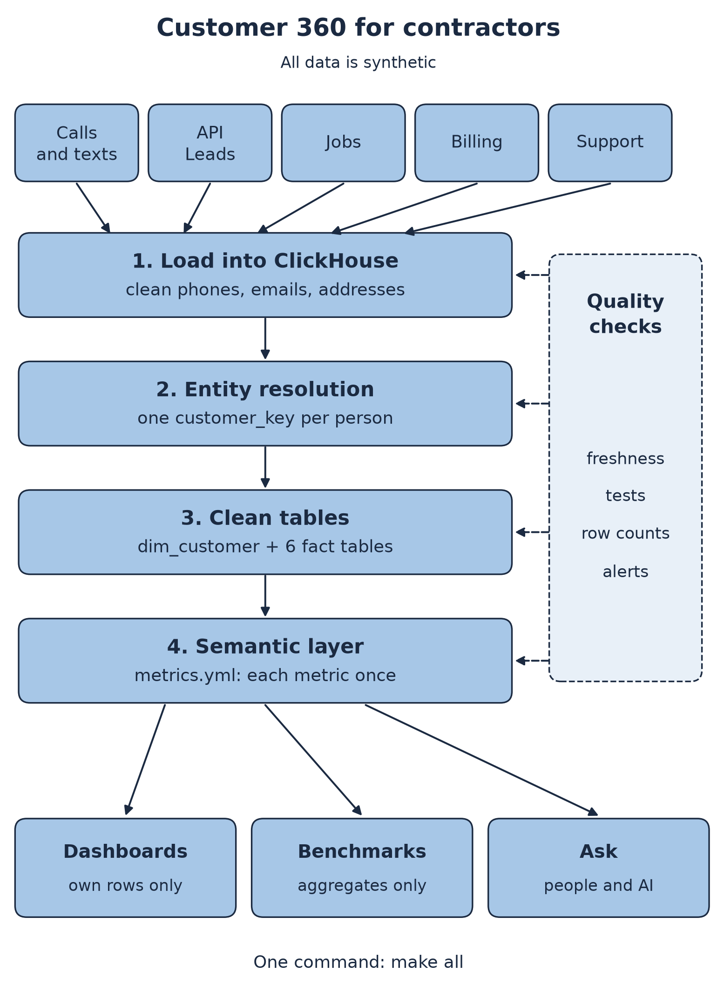

How this contractor is doing
12 months, October 2025 to September 2026. Tap a card to see its monthly trend.
Trend
Compared with peers
This contractor against the median of all contractors. Peers only see totals, never another contractor's own numbers. A peer group needs at least contractors, or nothing is shown.
One homeowner, one customer
Calls, leads, jobs, invoices and tickets each keep their own copy of a homeowner. Names have typos and phones come in many formats. Matching joins them into one customer.
What each matching rule adds
Lead conversion: id only vs matched
How many leads turned into a booked job within 14 days. Counting only jobs that carry the lead id misses many. Matching finds the rest.
Part of this gap is by design. The data generator keeps the lead id on only 60% of jobs that came from a lead. This view shows all contractors, as Broccoli staff would see it.
Ask a question
Plain English in, one metric out. It uses keyword matching, not a paid AI model. Every answer names the metric definition it used.
How it works
- Raw data. Five made up sources per contractor: calls and texts, API leads, ServiceTitan style jobs, invoices and support tickets.
- Warehouse. ClickHouse, run in Python with chDB. SQL models in layers: raw, staging, matching, marts, metrics.
- Matching. SQL rules on phone, email, system ids and fuzzy name plus address. Groups form by label propagation. Keys stay stable between runs.
- One metric file. Every number on this page is compiled from one file of metric definitions.
- Isolation. Row policies on a real ClickHouse server. Each contractor login sees only its own rows.
- Tests. One command builds it all and checks it.
